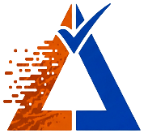

Veridelta 0.35.1, the accounts demo in demo/promo at commit ebe1dff
accounts_legacy.csv
and
accounts_rewrite.csv
Match rate
FAILED
0.0%
40 rows. 40 issues.
Most of it is noise.
accounts_legacy.csv
accounts_rewrite.csv
Case
west
→
WEST
Codes
active
→
A
Rounding
137.5
→
137.504
Blanks
→
N/A
Nothing is forgiven unless a rule says so.
accounts_rules.yaml
Case
Rounding
Blanks
Codes
rules:
- column_names: [region]
case_insensitive: true
- column_names: [balance]
absolute_tolerance: 0.005
- column_names: [note]
null_values: ["N/A"]
- column_names: [status]
value_map:
active: A
closed: C
paused: P
What is left is real.
CI fails the pull request on it.


Compare two datasets on their primary keys under rules you declare.
pip install veridelta
veridelta.github.io/veridelta